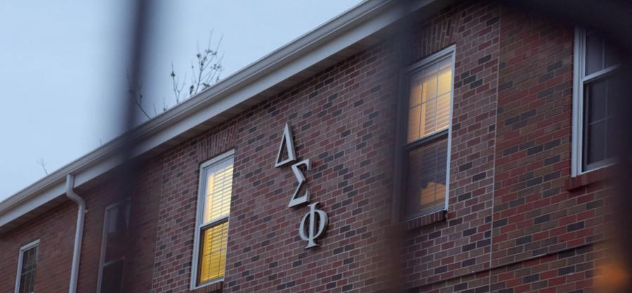
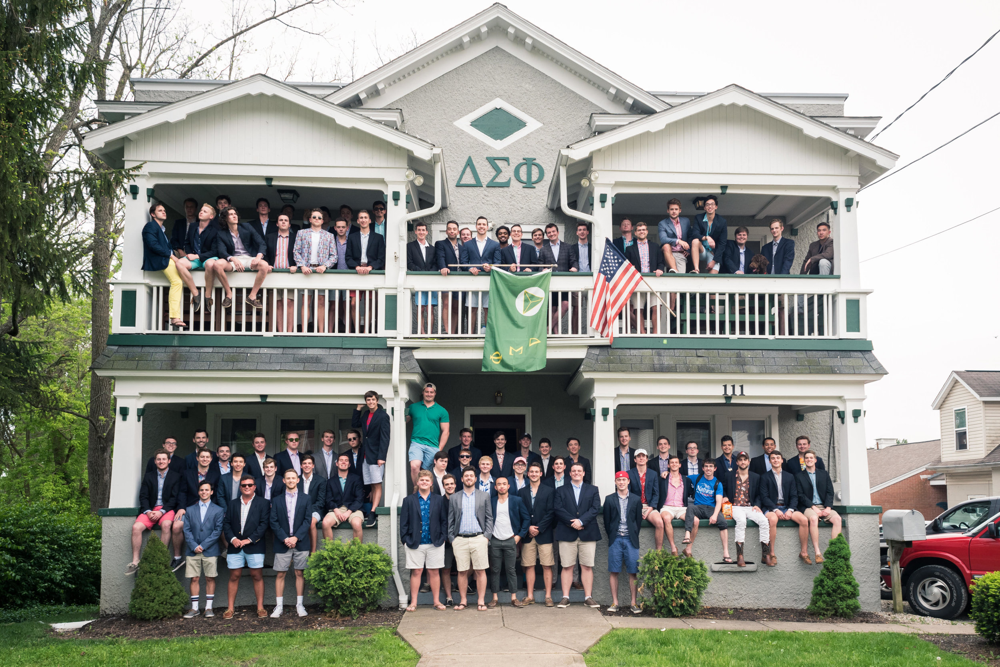

The principles of friendship and brotherhood among college men, without respect to race or creed.

Iota Xi.
The Delta Sigma Phi fraternity chapter at the University of South Carolina Aiken is renowned for its strong sense of brotherhood and commitment to academic excellence. Founded in 2017, this chapter is new and growing exponentially. We prioritize providing an enhanced college experience for the brothers as they go through their time at USCA. We are involved in philanthropy, community service, social events, inter-murals, brotherhood events, rituals, and much more.
R
Culture. Harmony. Friendship.
Join the movement. Commit to being The Better Man. Better Men who are guided by the principles of our ritual and our core values. Delta Sigs are men displaying culture, harmony, and friendship.
Delta Sigma Phi strives to ever convince the world of the sincerity of our purpose through a mission of Building Better Men. Our brotherhood inspires each member to be better versions of themselves and positively impact the world through their actions and influence—we challenge our men to be atypical, to break the mold, to be a beacon of strength for humanity. Delta Sigs everywhere are exhibiting the Courage to Dare, the Poise to Act and a Commitment to Excel.
R
Delta Sigma Phi History
Delta Sigma Phi has always prided itself on being the atypical fraternity. Members and Fraternity leaders demonstrate compassion, inclusion and harmony. This began with our founding.
By the late 1800s, several other fraternities already existed, but none awarded membership to both Christian and Jewish students. Much like the rest of the country, segregation was the norm; it was typical.
But on Dec. 10, 1899 by way of a secret meeting at City College of New York, Delta Sigma Phi was established as the first membership organization to initiate members from a variety of socioeconomic and ethnic backgrounds. Our Fraternity was founded on the principles of diversity and good character. Delta Sigma Phi incorporated with the purpose to spread “the principles of friendship and brotherhood among college men, without respect to race or creed.”
Delta Sigma Phi founders built an atypical group during hostile times. Today, Delta Sig continues to link men of all backgrounds to spark a social movement. He aspires to be significant, communally engaged and atypical. He trumpets cooperation and collaboration with others.
R